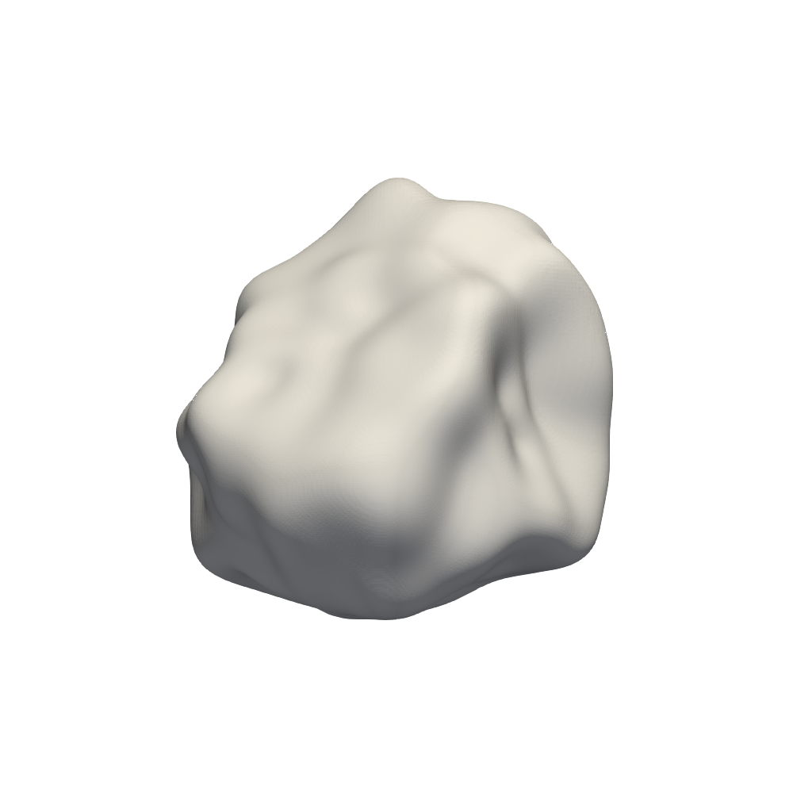
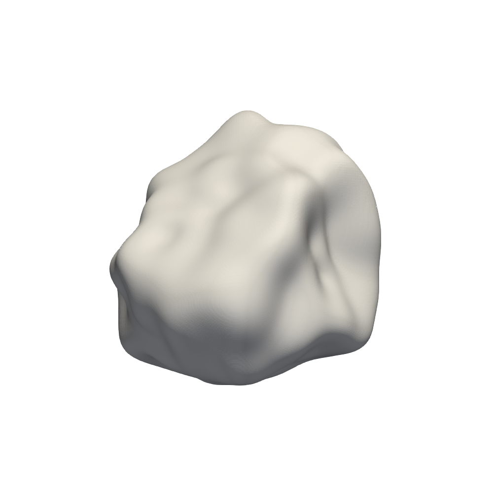

SPHERHARM Theory¶
Spherical harmonics can be used to represent a closed star-like i.e., any line segment drawn from an origin, O, inside the particle crosses the contour of the particle’s only once three-dimensional surface . This is achieved using both the spherical harmonic functions \(Y_n^m(\theta,\phi)\) and the spherical harmonic coefficients \(a_{nm}\):
where \(r(\theta,\phi)\) is any smooth function defined on the unit sphere with \(0\le\theta\le\pi\) and \(0\le\phi\le 2\pi\) .
In this case, \(r(\theta,\phi)\) describes the particle radius which is measured from its centre of mass. In practice, the above is approximated by truncating the initial sum from infinity to \(\theta\). Spherical harmonic function, \(Y_n^m\) of a degree \(n\) and order \(m\) is given as
where \(P_n^m(x)\) is the associated Legendre function, which can be calculated efficiently through the recurrence relations described by Press et al.@~cite{Press2007}.
Garboczi details how the coefficients \(a_{nm}\) can be extracted from a real particle using X-ray tomography and selecting radius measurement points that correspond with point of Gaussian quadrature such that can be solved, where the asterisk in the above denotes the complex conjugate .
 

{kind=link}